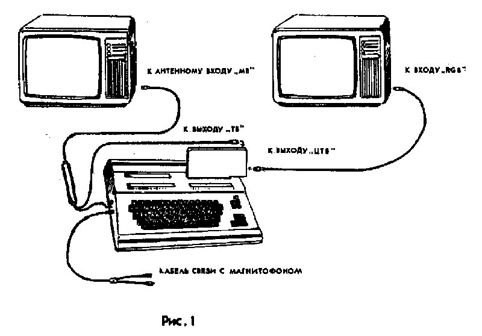
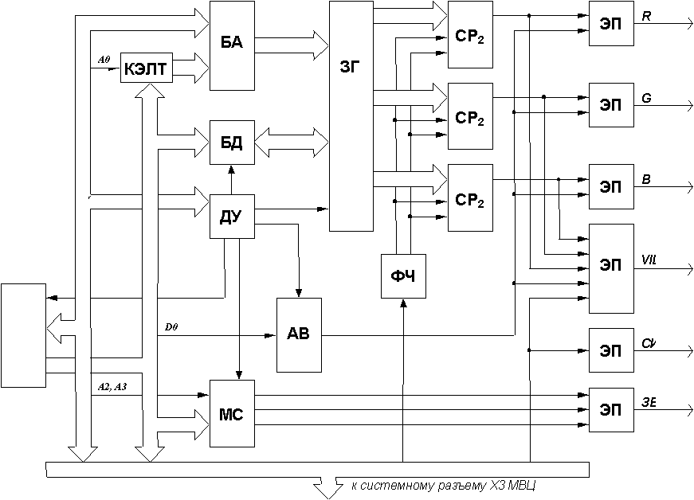

Сохранено с сайта http://arendatr.chat.ru
МОДУЛЬ ЦВЕТНОЙ ПСЕВДОГРАФИЧЕСКИЙ
"ПАРТНЕР 01.61"
Руководство по эксплуатации
1П3.039.004РЭ
1. Общие указания
ВНИМАНИЕ! 1. Модуль цветной псевдографический (в дальнейшем МЦПГ) работает только в составе модуля вычислительного центрального (в дальнейшем МВЦ) "Партнер 01.01" с операционной системой МОНИТОР версии 03 и выше. При включении МВЦ выводит на экран телевизора сообщение:
ПАРТНЕР-01.01 (В.03)
:->
Для доработки МВЦ с операционной системой МОНИТОР младших версий до версии 03 следует обратиться в ремонтные организации, перечень которых приведен во вкладыше.
2. В качестве устройства отображения информации в цвете могут быть использованы только бытовые телевизионные приемники цветного изображения, имеющие стандартный RGB-вход (ГОСТ 24838-87). Допускается использование в качестве устройства отображения информации бытовых цветных телевизоров, выполненных по унифицированным схемам типа 3УСЦТ, 4ПИТЦ и 1УПЦТ. Указанные типы телевизоров требуют доработки в соответствии с рекомендациями, приведенными в приложении 1.
1.1. МЦПГ "Партнер 01.61" предназначен для сопряжения МВЦ "Партнер 01.01" с бытовым цветным телевизором, имеющим RGB-вход, в режиме цветности, а также с бытовым цветным или черно-белым телевизором в режиме градаций яркости.
2. Комплектность поставки
В комплект поставки входят:
модуль цветной псевдографичекий "Партнер 01.61" - 1 шт.;
кабель. сопряжения с цветным телевизором - 1 шт.;
соединитель ОНЦ для установки в цветном телевизоре - 1 шт.;
магнитофонная кассета МК60 с программой "Графический редактор" и игровыми программами - 1 шт.;
руководство по эксплуатации 1П3.039.004РЭ со схемой электрической принципиальной и схемой расположения элементов - 1 экз.
3. Основные технические характеристики
3.1. Элементная база - микросхемы серий КР580, К555, К155, К537, К573.
3.2. МЦПГ обеспечивает отображение в формате экрана 1600 псевдографических символов (25 строк по 64 символа в строке) с форматом символа 4 х 8 точек. Количество цветов на точку - 8, количество цветов фона - 6. На экране черно-белого телевизора каждому цвету соответствует определенная градация яркости.
3.3. МЦПГ обеспечивает музыкальное сопровождение программ при помощи трехголосого программируемого музыкального синтезатора, построенного на базе интегральной микросхемы КР580ВИ53.
3.4. Программа "Графический редактор", загружаемая в МВЦ с магнитофона, позволяет формировать в ОЗУ знакогенератора МЦПГ одновременно два набора по 128 псевдографических символов.
3.5. Номенклатура и параметры сигналов, выдаваемых МЦПГ, приведены в табл. 1.
| Наименование сигнала | Контакт разъема | Размах, В |
|---|---|---|
| Видеосигнал красного цвета R | 5 (ЦТВ) | 0,7...1,4 |
| Видеосигнал зеленого цвета G | 4 (ЦТВ) | 0,7...1,4 |
| Видеосигнал синего цвета B | 3 (ЦТВ) | 0,7...1,4 |
| Кадровые и строчные синхроимпульсы | 2 (ЦТВ) | 0,7...1,4 |
| Звуковой сигнал | 1 (ЦТВ) | 0,1...2,0 |
| Напряжение коммутации | 7 (ЦТВ) | +12 ± 0,6 |
| Общий | 6 (ЦТВ) | 0 |
| Полный видеосигнал | 1 (ТВ) | 0,7...1,4 |
| Общий | 2 (ТВ) | 0 |
3.6. Питание МЦПГ осуществляется от МВЦ через системный разъем Х3. Ток потребления по каналу +5В не более 1,2 А, по каналу +12В - не более 70 мА.
3.7. Габаритные размеры МЦПГ - не более 245х160х35 мм; длина кабеля сопряжения с цветным телевизором - не более 2500 мм.
3.8. Масса МЦПГ - не более 0,8 кг.
4. Указание мер безопасности
4.1. При работе с МЦПГ необходимо учитывать все требования к безопасности, указанные в руководстве по эксплуатации на МВЦ "Партнер 01.01" (1П2.940.000РЭ).
4.2. Все подключения и отключения МЦПГ, а также кабелей сопряжения с телевизорами должны производиться ТОЛЬКО НА ОБЕСТОЧЕННЫХ МВЦ и телевизорах.
4.3. Во избежание перегрева МЦПГ запрещается закрывать вентиляционные отверстия.
4.4. Во избежание поражения электрическим током запрещается эксплуатировать МЦПГ со снятым кожухом.
5. Краткое описание изделия
5.1. Модуль цветной псевдографичекий "Партнер 01.61" по своим основным параметрам, определяющим функциональные возможности, соответствует требованиям технических условий 1П3.039.004ТУ.
5.2. МЦПГ позволяет расширить функциональные возможности МВЦ "Партнер 01.01" в части отображения псевдографической информации в цвете и в градациях яркости. МЦПГ может быть использован также для музыкального творчества.
5.3. Условная схема подключения МЦПГ к МВЦ и к цветному и черно-белому телевизорам приведена на рис. 1.
Для улучшения качества отображения информации в режиме градаций яркости допускается подключение МЦПГ непосредственно к видеовходу черно-белого телевизора. Для этого необходимо доработать модулять в соответствии с рекомендациями, приведенными в 1П2.940.000РЭ.
Кабель сопряжения с цветным телевизором распаян таким образом, что каждый контакт разъема, подключаемого к выходу "ЦТВ" МЦПГ, соединен с соответствующим контактом разъема, подключаемого к RGB-входу цветного телевизора, а контакт "6" (Общий) соединен с экраном разъема.
5.4. Принцип работы
5.4.1. МЦПГ состоит из следующих функциональных узлов (рис. 2):
КЭЛТ - контроллер электронно-лучевой трубки;
АВ - арбитр видеосигнала;
ДУ - дешифратор устройств;
ПЗУ - постоянное запоминающее устройство;
ЗГ - загружаемый знакогенератор;
ФЧ - Формирователь тактовых частот;
МА - мультиплексор адресов;
БД - буфер данных;
СРr - сдвиговые регистры;
МС - музыкальный синтезатор;
ЭП - эмиттерные повторители.
5.4.2. Контроллер ЭЛТ построен на базе интегральной микросхемы (ИМС) КР580ВГ75 и предназначен для выдачи адресов знаков, сформированных в знакогенераторе, выдачи сигнала управления курсором, управления буфером адреса, формирования цветов фона. КЭЛТ работает синхронно с контроллером ЭЛТ, расположенным в МВЦ.
5.4.3. Арбитр видеосигнала (АВ) предназначен для переключения режимов выдачи видеосигналов от внутреннего знакогенератора МВЦ и от загружаемого знакогенератора МЦПГ.
5.4.4. Дешифратор устройств (ДУ) предназначен для выработки сигналов управления на КЭЛТ, ЗГ, АВ, ПЗУ, МС.
5.4.5. ПЗУ предназначено для хранения драйвера МЦПГ.
5.4.6. Загружаемый знакогенератор (ЗГ) предназначен для формирования, хранения и выдачи кодов псевдографических символов в цвете или в градациях яркости и построен на двух ИМС К537РУ10 (статическое оперативное щапоминающее устройство) с общим объемом 4 Кбайта.
5.4.7. Формирователь тактовых частот (ФЧ) предназначен для формирования импульсов записи и сдвига, поступающих на сдвиговые регистры СРr видеосигналов красного (R), зеленого (G) и синего (B) цветов.
5.4.8. Мультиплексор адресов (МА) и буфер данных (БД) предназначены для подключения к ЗГ системных шин адреса и данных в режиме формирования знакогенератора и для подключения ЗГ к КЭЛТ в режиме выработки цветных видеосигналов.
5.4.9. Трехголосый музыкальный синтезатор (МС) построен на базе программируемого таймера (ИМС КР580ВИ53) и предназначен для выработки сигналов звуковой частоты.
5.4.10. Выходные эмиттерные повторители (ЭП) предназначены для обеспечения параметров выходных сигналов МЦПГ.
5.5. Программное обеспечение МЦПГ.
5.5.1. Программное обеспечение МЦПГ состоит из следующих частей: драйвер МЦПГ; программа "Графический редактор"; игровые программы.
Программа "Графический редактор" и игровые программы загружаются с магнитофонной кассеты МК60, входящей в комплект поставки МЦПГ. Перечень программ, находящихся на магнитофонной кассете, приведен в приложении 2.
6. Подготовка к работе и порядок работы
7. Руководство оператора
7.1. Порядок работы с цветным графическим редактором
7.1.1. Цветной графический редактор (в дальнейшем - редактор) - программа, предназначенная для создания различных псевдографических символов (в цвете или в градациях яркости). Редактор позволяет формировать нужные пользователю символы, просматривать их, хранить созданные наборы символов на магнитной ленте (МЛ), а также формировать изображения, используя вновь созданные наборы псевдографических символов.
Цветной псевдографический символ содержит 4х8 точек. Каждая точка может быть восьми цветов (белый, голубой, пурпурный, синий, желтый, зеленый, красный, черный). На экране черно-белого телевизора каждому цвету соответствует определенная градация яркости.
Размер экрана - 25 строк х 64 символа.
Количество цветов фона - 7 (белый, голубой, пурпурный, синий, зеленый, красный, черный).
Редактор позволяет формировать два набора знакогенератора по 128 символов (страница 0 и страница 1).
7.1.2. Описание режимов работы редактора
Запуск редатора осуществляется нажатием клавиш GB820. На экране индицируется меню режимов редактора.
7.1.2.1. Формирование символов знакогенератора
7.1.2.2. Просмотр знакогенератора
7.1.2.3. Удаление знакогенератора
7.1.2.4. Вывод знакогенератора на МЛ
7.1.2.5. Ввод знакогенератора с МЛ
7.1.2.6. Выход в монитор
7.1.2.7. Формирование фрагментов изображений
Режим предназначен для создания фрагментов изображения (размером 25 строк х 64 символа) с клавиатуры, хранения созданных фрагментов в ОЗУ и на МЛ. Режим позволяет одновременно хранить в ОЗУ 7 фрагментов. Объем одного фрамента - 97FH байт. Начальные адреса фрагментов приведены в табл. 2. Таблица соответствия кодов символов наименованиям клавиш МВЦ "Партнер-01.01" приведена в приложении 3.
| Номер фрагмента | Начальный адрес ОЗУ |
|---|---|
| 1 | 8000H |
| 2 | 897FH |
| 3 | 8F3EH |
| 4 | 96DDH |
| 5 | 9E7CH |
| 6 | A61BH |
| 7 | ADBAH |
Выход в режим формирования фрагментов изображений производится из меню режимов нажатием клавиши Е.
7.2. Порядок работы с функциями МЦПГ
7.2.1. Описание функций МЦПГ
Функции МЦПГ представляют собой подпрограммы, расположенные в ПЗУ модуля. Функции МЦПГ предназначены для использования возможностей МЦПГ в прикладных программах. Порядок вызова функций МЦПГ описан в п.7.2.2.Каждая функция МЦПГ имеет свой номер (в 16-ричном виде). Функции с номерами 1-5, 7 являются служебными, они используются программой "Графический редактор".
Функция 6 - разрешение режима знакогенератора модуля, сжатие строк на экране телевизора (монитора).
После выполнения функции 6 разрешается использование знакогенератора МЦПГ, кроме того, контроллер ЭЛТ переводится в режим отображения без межстрочных интервалов.
Функция 8 - подготовка файла, состоящего из знакогенератора модуля и фрагментов изображения, сформированных с помощью "Графического редактора".
При вызове функции 8 на экране высвечивается запрос:
ВВЕДИТЕ НОМЕР ПЕРВОГО ФРАГМЕНТА -
В ответ на него следует нажать одну из клавиш 0...7 и ВК. При вводе клавиши "0" предполагается, что подготавливаемый файл будет содержать только знакогенератор. В остальных случаях выводится следующий запрос:
ВВЕДИТЕ НОМЕР ПОСЛЕДНЕГО ФРАГМЕНТА -
В ответ следует ввести требуемый номер (от 1 до 7). После на экран выводится сообщение ФАЙЛ С РАСШИРЕНИЕМ .COM ПОДГОТОВЛЕН , а также начальный и конечный адреса области ОЗУ, в которой размещен файл, и адрес запуска. Кроме того, индицируется объем подготовленного файла в блоках (один блок содержит 256 байт информации). По окончании выполнения функции 8 управление передается МОНИТОРУ, на экране индицируется :->. Подготовленная информация может быть записана на магнитную ленту директивами W и O монитора (см. 1П.00045-01 34 01 "Программное обеспечение МВЦ "Партнер 01.01", руководство оператора). Расширение имени файла указывает .COM на то, что подготовленный файл должен быть записан на магнитную ленту с указанием адреса автоматического запуска (директивой W), либо (если файл был записан с помощью директивы O) сразу после считывания (директивой I) необходимо запустить программу нажатием клавиш G100. Программа осуществляет перемещение информационных массивов (знакогенератор, фрагменты изображения) в соответствующие области ОЗУ.
ВНИМАНИЕ! Функция 8 при подготовке файла использует область ОЗУ, начиная с адреса 100H в сторону увеличения адресов. Если Вы перед выполнением функции 8 не примете мер по сохранению информации, расположенной в указанной области (запись на магнитную ленту, перемещение в другую область ОЗУ), эта информация будет потеряна.
Функция 9 - запрещение режима знакогенератора модуля, переход в штатный режим отображения информации.
Функция 9 выполняет действия, обратные функции 6.
Функция A - разрешение использовани знакогенератора МЦПГ.
Функция B - запрещение использовани знакогенератора МЦПГ.
Функция C - воспроизведение звука.
Данная функция воспроизводит заданную ноту с заданной длительностью. Перед вызовом функции C необходимо задать входные параметры: регистр L - номер ноты (от 1 до 85), регистр C - длительность ноты (от 0 до 0FFH). Номер ноты указывается в соответствии с таблицей, приведенной в приложении 4. Номер ноты, равный 85, означает воспроизведение паузы. При загрузке в регистр C числа 0FFH заданная нота звучит примерно 4 секунды.
Функция D - воспроизведение звука.
Данная функция программирует заданный счетчик таймера КР580ВИ53 на воспроизведение заданной ноты. Номер ноты указывается перед вызовом функции в регистре L (аналогично функции C). Номер счетчика определяют два младших бита регистра C следующим образом:
00 - счетчик 0;
01 - счетчик 1;
10 - счетчик 2;
11 - в этом случае указанная нота будет выдана на все три счетчика.
Заданная нота будет звучать до следующего обращения к функции D (или функции C).
7.2.2. Порядок обращения к функциям МЦПГ
Вызов функции модуля осуществляется по номеру функции и имени модуля, в котором эта функция находится. Именем модуля ЦПГ является латинская буква C (код символа 43H). Функции МЦПГ могут быть вызваны пользователем:
из программы, написанной на языке АССЕМБЛЕР;
из программы, написанной на языке БЕЙСИК;
в ручном режиме.
Вызов функции модуля из ассемблерной программы производится с помощью стандартной подпрограммы МОНИТОРА. Адрес подпрограммы - 0F7ABH. Перед вызовом указанной подпрограммы необходимо в регистровой паре DE задать входные параметры (в 16-ричном виде):
D - номер функции, E - имя модуля. Например,
LXI D,0A43H
CALL 0F7ABH - будет выполнена функция A модуля ЦПГ.
Вызов функции модуля из БЕЙСИК-программы производится следующим образом:
- в ячейки памяти 7622H и 7623H записываются (в 16-ричном коде) имя модуля и номер функции соответственно;
- вызывается подпрограмма МОНИТОРА по адресу 0F0E2H.
Например, фрагмент программы
POKE&7622,&43:POKE&7623,&6:A=USR(&F0E2)
осуществляет вызов функции 6 модуля ЦПГ.
Вызов функции модуля в ручном режиме осуществляется директивой МОНИТОРА
V,nm - где n - номер фнукции, m - имя модуля;
n - в 16-ричном коде
Например, для подготовки файла знакогенератора МЦПГ и сформированных фрагментов изображения следует вызвать функцию 8 МЦПГ:
V,843
7.2.3. Использование знакогенератора МЦПГ в прикладных программах
Для получения возможности работы с наборами символов, подготовленных с помощью "Графического редактора", необходимо выполнить следующие действия:
1) загрузить с магнитной ленты сформированный знакогенератор ОЗУ модуля ЦПГ;
2) разрешить режим использования знакогенератора МЦПГ (функцией 6 или функцией А).
После этого можно работать со знакогенератором МЦПГ (два набора символов, два атрибута изображения - подчеркивание и мерцание, управление фоном), а также со штатным знакогенератором МВЦ. Переключение в нужный режим производится посредством записи в видеоЗУ МВЦ байта управляющего кода, назначение битов которого приводится на рис. 3.
Биты П и М, установленные в 1, включают соответствующие атрибуты изображения, а установленные в 0 - выключают. Бит НБ, установленный в 0, позволяет работать с первым набором знакогенератора МЦПГ, установленный в 1 - со вторым набором. Выбор фона осуществляется битами Ф1, Ф2, Ф3 в соответствии с табл. 3. Действие управляющего кода распространяется до появления следующего кода (в границах видеоЗУ). В видимой части видеоЗУ управляющий код отображается пробелом.
| 1 | 0 | Подчеркивание | Номер набора | Ф1 | Ф2 | Мерцание | Ф3 |
| Ф1 | Ф2 | Ф3 | Цвет фона |
|---|---|---|---|
| 0 | 0 | 0 | черный |
| 0 | 0 | 1 | синий |
| 0 | 1 | 0 | красный |
| 0 | 1 | 1 | пурпурный |
| 1 | 0 | 0 | зеленый |
| 1 | 0 | 1 | голубой |
| 1 | 1 | 0 | переключение на знакогенератор МВЦ |
| 1 | 1 | 1 | белый |
Операционная система МОНИТОР версии .03 предусматривает возможность вывода управляющего кода на экран с помощью стандартной подпрограммы "Вывод символа на экран" (адрес вызова 0F809H). Для вывода управляющего кода таким образом необходимо предварительно записать в ячейку памяти с адресом 7654H код, отличный от 0.
Пример 1:
10 POKE&7654,&FF:PRINT CHR╓(&90);"123"
20 PRINT CHR$(&8C);"знакогенератор МВЦ"
В результате действия управляющего кода 90H на экран будут выведены на черном фоне (биты Ф1=Ф2=Ф3=0) символы с кодами 31H, 32H, 33H из второго набора знакогенератора МЦПГ (бит НБ=1). Затем упраляющий код 8CH переключит МВЦ в режим работы со штатным знакогенератором (Ф1=Ф2=1, Ф3=0).
Пример 2:
LXI H,7654H
MVI M,0FFH
MVI C,86H
CALL 0F809H
После выполнения этого фрагмента на экран в текущую позицию курсора будет выведен управляющий символ 86H. До появления следующего управляющего кода все выводимые на экран символы будут выбираться из первого набора знакогенератора МЦПГ (НБ=0), индицироваться на красном фоне (Ф1=Ф3=0, Ф2=1) с включенным атрибутом мерцания (М=1).
7.3. Описание игровых программ
7.3.1. Игровая программа "Лестница"
7.3.1. Игровая программа "Марс"
7.3.1. Игровая программа "Теннис"
7.3.1. Игровая программа XONIX
8. Техническое обслуживание
8.1. Неправильная эксплуатация МЦПГ может сократить срок его службы и снизить качественные показатели.
Потребитель должен помнить, что небрежное или неумелое обращение с МЦПГ, нарушение требований руководства по эксплуатации может привести к выходу из строя МЦПГ.
8.2. Для надежной и правильной работы МЦПГ должен быть защищен от попадания пыли и влаги.
8.3. В процессе всего срока эксплуатации МЦПГ необходимо проводить визуальный осмотр МЦПГ, кабеля, соединительных разъемов, а также производить удаление пыли с наружных частей МЦПГ.
8.4. Возможные неисправности и методы их устранения потребителем приведены в табл. 4.
| Характер неисправности | Признак неисправности и вероятная причина | Метод устранения |
|---|---|---|
| 1. При подключенном МЦПГ МВЦ не работает | При нажатии клавиш на МВЦ нет звука зуммера, не переключается индикатор при нажатии клавиши ЛАТ. Загнулись контакты разъема подключения МЦПГ к МВЦ. | Выпрямить контакты, произвести повторное подключение. |
9. Гарантии изготовителя (поставщика)
Приложение 1
Доработка цветных телевизоров под RGB-вход
1. Доработка цветный телевизоров типа 3УСЦТ ("Фотон Ц-276/276Д" и др.)
2. Доработка цветный телевизоров типа 1УПТЦ ("Юность 32ТЦ-309/309Д" и др.)
3. Доработка цветный телевизоров типа 4ПИТЦ ("Электроника Ц-432" и др.)
Приложение 2
Перечень программ магнитофонной кассеты
| Наименование программы | Счетчик расхода ленты | Директива считывания | Адрес запуска | Примечание |
|---|---|---|---|---|
| 1. "Графический редактор" | 0 | R | GB820 | Записана 2 раза |
| 2. "Лестница" | 20 | R | G100 | То же |
| 3. "Марс" | 80 | R | G100* | -"- |
| 4. "Теннис" | 126 | R | G100* | -"- |
| 5. "Xonix" | 185 | R | G100** | -"- |
* Все последующие запуски производятся по директиве G0.
** Все последующие запуски производятся по директиве G3000.